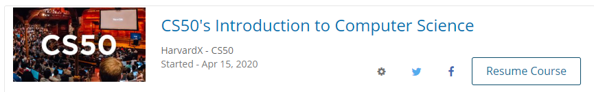

T2W9 - Finish DataCamp data science course
T2W9 - Finish DataCamp machine learning course
During hols - Finish as much cs50 as possible
During hols - Cyberthon
After hols - Brainhack, Unity
DataCamp Machine Learning for Everyone
- Overall I have become more aware of the process of creating a machine learning model, which made it a lot easier for me when I started creating my own model.
DataCamp Data Science for Everyone
- Through this course I have gained a better understanding of using computer to process information. It was quite the eye opener for me.
Cyberthon 2020
- Even though my group did not really solve a lot of the questions, this event still gave me the opportunity learn about various knowledge ranging from computer networks to ciphers... It was through this event that I get to explore Kali Linux, which is both enriching and fun.
Team Pawesome
- Learning Unity to help Team Pawesome create a game for their initiative.
Brainhack
- Currently training for Brainhack
CS50
- Currently stuck at week 4's problem set
